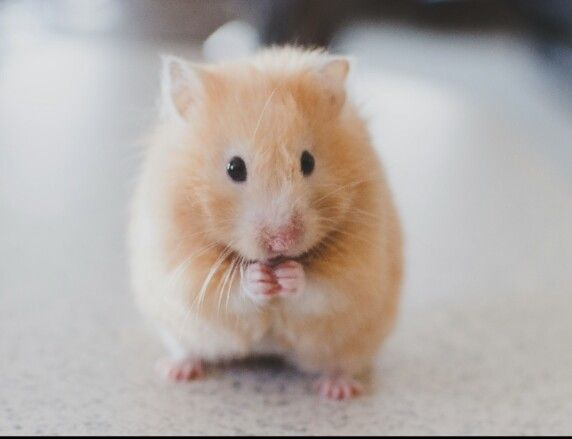

Saffron
ID: 5
Species: Hamster
Breed: Syrian
Age: 2 years
Status: Adopted
Description
Cute and fluffy hamster perfect for kids. Requires small cage and proper handling.
Contact / Apply
Saffron is adopted; check other pets or contact shelter for similar hamsters.